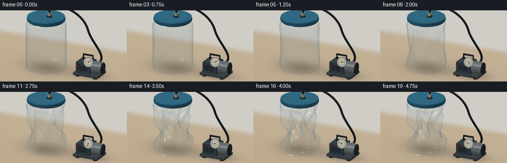
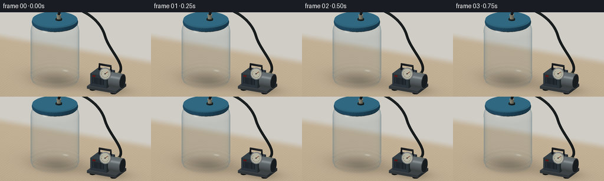
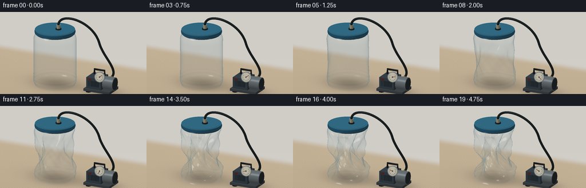
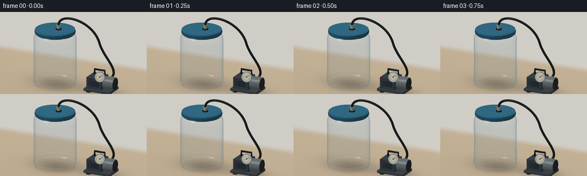

CODING AGENTS AS PIXEL WORLD MODELS
traex/GPT-6.1-Sol · mechanics_0027
点击播放 · 原生 RGB 像素
逐轮保存的候选
回放视频、检查图与代码变化。
每份候选均可单独播放。实际图片检查记录在下方工具轨迹中。
候选 01播放与检查图
点击播放 · 原生 RGB 像素


展开代码变化
--- 上一保存版本
+++ 本次保存版本
@@ -0,0 +1,238 @@
+from pathlib import Path
+import json
+import numpy as np
+from PIL import Image, ImageDraw, ImageFilter
+import artifact_io
+
+ROOT=Path(__file__).resolve().parent
+SPEC=json.loads((ROOT/'task_spec.json').read_text())
+S=3; W=SPEC['width']*S; H=SPEC['height']*S
+rng=np.random.default_rng(12)
+# A small software renderer: geometry, studio reflections and thin-wall transmission.
+cam=np.array([7.,-14.,8.]); target=np.array([.25,0.,2.0])
+fwd=(target-cam); fwd/=np.linalg.norm(fwd)
+right=np.cross(fwd,[0.,0.,1.]); right/=np.linalg.norm(right)
+up=np.cross(right,fwd)
+scale=W/8.6
+view=-fwd
+light=np.array([-3.,-5.,9.]); light/=np.linalg.norm(light)
+
+def project(v):
+ q=np.asarray(v)-target
+ return np.stack([W/2+q@right*scale,H/2-q@up*scale,q@fwd],axis=-1)
+
+def norm(a):
+ return a/np.maximum(np.linalg.norm(a,axis=-1,keepdims=True),1e-9)
+
+Y,X=np.mgrid[:H,:W]
+orig=target+(X[...,None]-W/2)/scale*right-(Y[...,None]-H/2)/scale*up-fwd*15
+rt=-orig[...,2]/fwd[2]
+world=orig+rt[...,None]*fwd
+xx,yy=world[...,0],world[...,1]
+# Subtle light oak / neutral workbench, and defocused warm studio wall.
+noise=rng.normal(0,.42,(H,W))
+grain=np.sin(xx*40+2*np.sin(yy*.7)+.6*np.sin(xx*7+yy*3))
+grain+=.45*np.sin(xx*138+yy*.5)+.21*np.sin(xx*249+yy*1.8)
+base=np.zeros((H,W,3),float)
+for k,c in enumerate([191,173,146]): base[...,k]=c+grain*[2.2,2.,1.6][k]+noise+yy*.8
+wall=np.clip((yy-4.8)/1.3,0,1)
+wall=wall*wall*(3-2*wall)
+wallcol=np.stack([207+Y*.005,205+Y*.004,198+Y*.005],-1)
+base=base*(1-wall[...,None])+wallcol*wall[...,None]
+# Static soft contact and cast shadows on the tabletop.
+shadow=.20*np.exp(-((xx+1.05)**2/1.9+(yy-.15)**2/.95))
+shadow+=.15*np.exp(-((xx+1.3)**2/3.1+(yy-1.)**2/1.1))
+shadow+=.28*np.exp(-((xx-2.05)**2/1.25+(yy-.5)**2/.60))
+base*=1-shadow[...,None]
+base=np.clip(base,0,255)
+
+class Renderer:
+ def __init__(self):
+ self.image=base.copy(); self.depth=np.full((H,W),1e6)
+ def mesh(self,v,faces,color,normal=None,plastic=False):
+ v=np.array(v,float); faces=np.array(faces,int); p=project(v)
+ if normal is None:
+ normal=np.zeros_like(v)
+ for f in faces:
+ n=np.cross(v[f[1]]-v[f[0]],v[f[2]]-v[f[0]])
+ normal[f]+=n
+ normal=norm(normal)
+ if plastic:
+ faces=faces[np.argsort(p[faces,2].mean(1))[::-1]]
+ for f in faces:
+ pts=p[f]; xmin=max(0,int(np.floor(pts[:,0].min()))); xmax=min(W-1,int(np.ceil(pts[:,0].max())))
+ ymin=max(0,int(np.floor(pts[:,1].min()))); ymax=min(H-1,int(np.ceil(pts[:,1].max())))
+ if xmax<xmin or ymax<ymin: continue
+ a,b,c=pts
+ den=(b[1]-c[1])*(a[0]-c[0])+(c[0]-b[0])*(a[1]-c[1])
+ if abs(den)<1e-8: continue
+ gy,gx=np.mgrid[ymin:ymax+1,xmin:xmax+1]; gx=gx+.5; gy=gy+.5
+ u=((b[1]-c[1])*(gx-c[0])+(c[0]-b[0])*(gy-c[1]))/den
+ w=((c[1]-a[1])*(gx-c[0])+(a[0]-c[0])*(gy-c[1]))/den; t=1-u-w
+ depth=u*a[2]+w*b[2]+t*c[2]
+ mask=(u>=-1e-7)&(w>=-1e-7)&(t>=-1e-7)&(depth<self.depth[ymin:ymax+1,xmin:xmax+1])
+ if not mask.any(): continue
+ n=norm(u[...,None]*normal[f[0]]+w[...,None]*normal[f[1]]+t[...,None]*normal[f[2]])
+ dot=n@view
+ if plastic:
+ # Two interfaces of very thin PET. Reflection grows strongly at grazing angles.
+ n=np.where((dot<0)[...,None],-n,n); nv=np.abs(dot)
+ fres=.035+.965*(1-nv)**5
+ refl=2*nv[...,None]*n-view
+ # Broad rectangular softbox reflection, narrower secondary strip.
+ rl=norm(np.array([-3.5,-5.,5.5]))
+ rs=norm(np.array([4.,-.4,4.]))
+ spec=np.exp(-((1-refl@rl)/.042)**2)
+ spec2=np.exp(-((1-refl@rs)/.020)**2)
+ env=np.zeros_like(n)+np.array([126.,149.,155.])
+ env+=np.maximum(refl[...,2],0)[...,None]*np.array([58,51,40])
+ env+=spec[...,None]*135+spec2[...,None]*95
+ # Dark reflected floor at the outer contour.
+ env-=np.maximum(-refl[...,2],0)[...,None]*np.array([57,61,57])
+ alpha=np.clip(.065+fres*.66+spec*.25+spec2*.20,0,.93)
+ col=np.clip(env,0,255)
+ patch=self.image[ymin:ymax+1,xmin:xmax+1]
+ # Minute refraction of grain and objects through the empty wall.
+ sx=np.clip(np.rint(gx+n@right*1.5*S).astype(int),0,W-1)
+ sy=np.clip(np.rint(gy-n@up*1.0*S).astype(int),0,H-1)
+ transmitted=base[sy,sx]
+ old=patch.copy()
+ old=old*.96+transmitted*.04
+ out=old*(1-alpha[...,None])+col*alpha[...,None]
+ patch[mask]=out[mask]
+ else:
+ lam=np.maximum(n@light,0)
+ half=norm(light+view)
+ spec=np.maximum(n@half,0)**70
+ col=np.array(color)*(0.56+.44*lam[...,None])+spec[...,None]*45
+ patch=self.image[ymin:ymax+1,xmin:xmax+1]
+ patch[mask]=np.clip(col,0,255)[mask]
+ self.depth[ymin:ymax+1,xmin:xmax+1][mask]=depth[mask]
+ def tube(self,points,r,color,steps=12):
+ points=np.array(points); vv=[]
+ for i,p in enumerate(points):
+ tang=points[min(i+1,len(points)-1)]-points[max(0,i-1)]
+ tang=norm(tang); a=norm(np.cross(tang,[0,1,.01])); b=np.cross(tang,a)
+ for t in np.linspace(0,2*np.pi,steps,endpoint=False): vv.append(p+r*(a*np.cos(t)+b*np.sin(t)))
+ ff=[]
+ for j in range(len(points)-1):
+ for i in range(steps):
+ a=j*steps+i;b=j*steps+(i+1)%steps;c=(j+1)*steps+i;d=(j+1)*steps+(i+1)%steps
+ ff.extend([[a,b,d],[a,d,c]])
+ self.mesh(vv,ff,color)
+ def cyl(self,center,r,h,color,segments=72,axis=np.array([0,0,1.]),r2=None):
+ axis=norm(np.array(axis)); a=norm(np.cross(axis,[0,1,.001])); b=np.cross(axis,a)
+ vv=[]; nn=[]
+ if r2 is None:r2=r
+ for z,rad in [(0,r),(h,r2)]:
+ for t in np.linspace(0,2*np.pi,segments,endpoint=False):
+ nv=a*np.cos(t)+b*np.sin(t); vv.append(np.array(center)+z*axis+rad*nv); nn.append(nv)
+ ff=[]
+ for i in range(segments): j=(i+1)%segments; ff.extend([[i,j,j+segments],[i,j+segments,i+segments]])
+ self.mesh(vv,ff,color,np.array(nn))
+ for z,rad,n in [(0,r,-axis),(h,r2,axis)]:
+ cv=[np.array(center)+z*axis];cv += [cv[0]+rad*(a*np.cos(t)+b*np.sin(t)) for t in np.linspace(0,2*np.pi,segments,endpoint=False)]
+ cf=[[0,i+1,(i+1)%segments+1] for i in range(segments)]
+ self.mesh(cv,cf,color,np.tile(n,(segments+1,1)))
+ def box(self,low,high,color):
+ x,y,z=low; X1,Y1,Z=high
+ vv=np.array([[x,y,z],[X1,y,z],[X1,Y1,z],[x,Y1,z],[x,y,Z],[X1,y,Z],[X1,Y1,Z],[x,Y1,Z]])
+ faces=[[0,3,2,1],[4,5,6,7],[0,1,5,4],[1,2,6,5],[2,3,7,6],[3,0,4,7]]
+ for f in faces:
+ p=vv[f];n=norm(np.cross(p[1]-p[0],p[2]-p[0]));self.mesh(p,[[0,1,2],[0,2,3]],color,np.tile(n,(4,1)))
+
+def bezier(ctrl,n=45):
+ c=np.array(ctrl);t=np.linspace(0,1,n)[:,None]
+ return (1-t)**3*c[0]+3*t*(1-t)**2*c[1]+3*t*t*(1-t)*c[2]+t**3*c[3]
+
+# The jar's walls have thin molded ribs, then irregular vacuum-induced folds.
+def jar_mesh(amount):
+ nt=112;nz=72; vv=[]
+ for j in range(nz):
+ u=j/(nz-1);z=.16+3.53*u
+ # rounded heel and shoulders, with rigid circular neck.
+ r=1.38
+ r-=.105*np.exp(-(u/.045)**2)
+ r-=.16*np.clip((u-.88)/.12,0,1)**1.7
+ r+=.014*np.cos(u*2*np.pi*14)*np.exp(-((u-.1)/.08)**2)
+ weight=np.sin(np.pi*u)**.68
+ weight*=1-np.exp(-((1-u)/.09)**2)
+ for t in np.linspace(0,2*np.pi,nt,endpoint=False):
+ # Asymmetric broad inward panels with a few hard, physically plausible creases.
+ fold=(.25+.23*np.cos(3*t+u*4.8)+.11*np.cos(5*t-u*7.5)+.075*np.cos(8*t+u*11))
+ pinch=.38*np.exp(-((u-.51)/.24)**2)*(.7+.3*np.cos(t-1.0))
+ dent=amount*weight*(fold+pinch)
+ rr=r*(1-dent)
+ wrinkle=amount**1.7*.075*weight*np.cos(15*t+u*39)*np.exp(-((u-.45)/.31)**2)
+ rr+=wrinkle
+ zz=z+amount*.13*weight*np.sin(3*t+u*8)
+ cx=-1.05+amount*.14*weight*np.sin(u*5)
+ cy=amount*.11*weight*np.cos(u*7)
+ vv.append([cx+rr*np.cos(t),cy+rr*np.sin(t),zz])
+ ff=[]
+ for j in range(nz-1):
+ for i in range(nt):
+ a=j*nt+i;b=j*nt+(i+1)%nt;c=(j+1)*nt+i;d=(j+1)*nt+(i+1)%nt
+ ff.extend([[a,b,d],[a,d,c]])
+ return vv,ff
+
+def scene(a):
+ r=Renderer()
+ # Compact electric vacuum pump: rubber feet, graphite housing, aluminum motor.
+ for x in [1.35,2.67]:
+ for y in [-.03,.88]:r.cyl([x,y,.03],.17,.12,[28,30,31],32)
+ r.box([1.10,-.26,.13],[2.95,1.06,.29],[66,72,76])
+ r.box([1.24,-.13,.29],[2.28,.96,1.04],[57,68,76])
+ r.cyl([2.3,.43,.66],.43,.71,[105,113,116],axis=[1,0,0],segments=48)
+ r.cyl([2.96,.43,.66],.39,.065,[45,51,55],axis=[1,0,0],segments=48)
+ # cooling slots on the front of housing
+ for x in np.linspace(1.40,2.07,8):r.box([x,-.143,.47],[x+.035,-.134,.85],[27,33,37])
+ # rigid carrying handle
+ r.tube([[1.45,.65,1.03],[1.45,.65,1.38],[2.17,.65,1.38],[2.17,.65,1.03]],.065,[30,34,37],12)
+ r.box([1.4,-.165,.89],[1.58,-.14,.98],[122,31,25])
+ # Gauge, directed towards the camera: pale face, radial ticks and needle.
+ axis=norm(np.array([.15,-1,.26])); gc=np.array([2.24,-.17,1.22])
+ r.cyl(gc,.345,.095,[152,157,157],64,axis)
+ face=gc+axis*.099
+ r.cyl(face,.293,.008,[222,218,197],64,axis)
+ e1=norm(np.cross(axis,[0,0,1.]));e2=np.cross(axis,e1)
+ center=face+axis*.012
+ for k in range(19):
+ t=np.deg2rad(220-k*14);v=e1*np.cos(t)+e2*np.sin(t)
+ r.tube([center+v*.235,center+v*(.192 if k%3==0 else .212)],.009,[56,61,57],6)
+ angle=np.deg2rad(220-250*a)
+ needle=e1*np.cos(angle)+e2*np.sin(angle)
+ r.tube([center-needle*.045,center+needle*.194],.014,[159,43,30],8)
+ r.cyl(center,.034,.015,[45,48,47],24,axis)
+ # Blue gasketed lid stays rigid and sealed throughout evacuation.
+ r.cyl([-1.05,0,3.63],1.23,.09,[35,57,65])
+ r.cyl([-1.05,0,3.70],1.30,.17,[36,88,119])
+ r.cyl([-1.05,0,3.87],1.29,.055,[52,112,139])
+ r.cyl([-1.05,0,3.925],1.18,.012,[52,112,139])
+ for t in np.linspace(0,2*np.pi,92,endpoint=False):
+ p=np.array([-1.05+1.302*np.cos(t),1.302*np.sin(t),3.73])
+ r.tube([p,p+[0,0,.105]],.012,[52,107,134],5)
+ # Metal vacuum valve and black hose, connected through lid's airtight gasket.
+ r.cyl([-.82,.03,3.94],.19,.07,[33,43,45],40)
+ r.cyl([-.82,.03,4.01],.113,.21,[169,165,141],40)
+ r.cyl([-.82,.03,4.20],.14,.05,[150,149,136],40)
+ hose1=bezier([[-.82,.03,4.24],[-.78,.03,5.20],[1.54,.21,4.87],[1.92,.39,3.30]],50)
+ hose2=bezier([[1.92,.39,3.30],[2.17,.45,2.38],[3.11,.72,1.60],[2.70,.64,1.04]],40)
+ r.tube(np.concatenate([hose1,hose2[1:]]),.075,[33,39,40],14)
+ r.cyl([2.70,.64,.91],.115,.18,[160,150,120],32)
+ # Hollow PET container, no contents. Its far and near wall both transmit the scene.
+ vv,ff=jar_mesh(a)
+ r.mesh(vv,ff,[190,218,225],plastic=True)
+ # Soft clear molded heel and neck rings.
+ return np.array(Image.fromarray(np.uint8(np.clip(r.image,0,255))).resize((SPEC['width'],SPEC['height']),Image.Resampling.LANCZOS))
+
+if __name__=='__main__':
+ frames=[]
+ for i in range(SPEC['frames']):
+ t=i/(SPEC['frames']-1)
+ # A short intact establishing interval, then accelerating pressure buckling.
+ x=np.clip((t-.09)/.85,0,1)
+ a=(x*x*(3-2*x))*.98
+ frames.append(scene(a))
+ print('Rendered',i,flush=True)
+ artifact_io.save(np.stack(frames).astype(np.uint8),ROOT)
候选 02播放与检查图
点击播放 · 原生 RGB 像素


展开代码变化
--- 上一保存版本 +++ 本次保存版本 @@ -9,11 +9,11 @@ S=3; W=SPEC['width']*S; H=SPEC['height']*S rng=np.random.default_rng(12) # A small software renderer: geometry, studio reflections and thin-wall transmission. -cam=np.array([7.,-14.,8.]); target=np.array([.25,0.,2.0]) +cam=np.array([7.,-14.,8.]); target=np.array([.25,0.,2.50]) fwd=(target-cam); fwd/=np.linalg.norm(fwd) right=np.cross(fwd,[0.,0.,1.]); right/=np.linalg.norm(right) up=np.cross(right,fwd) -scale=W/8.6 +scale=W/9.4 view=-fwd light=np.array([-3.,-5.,9.]); light/=np.linalg.norm(light)
可观测工具轨迹
实际执行的命令与返回图片。
命令 1exit 0
/bin/bash -lc 'ls -la; cat prompt.txt; cat GENERATION_RULES.md; cat task_spec.json'
命令 2exit 0
/bin/bash -lc "cat artifact_io.py; python - <<'PY' import importlib.util for m in ['numpy','PIL','scipy']: print(m, bool(importlib.util.find_spec(m))) PY"
命令 3exit 0
/bin/bash -lc "cat > generate.py <<'PY'
from pathlib import Path
import json
import numpy as np
from PIL import Image, ImageDraw, ImageFilter
import artifact_io
ROOT=Path(__file__).resolve().parent
SPEC=json.loads((ROOT/'task_spec.json').read_text())
S=3; W=SPEC['width']*S; H=SPEC['height']*S
rng=np.random.default_rng(12)
# A small software renderer: geometry, studio reflections and thin-wall transmission.
cam=np.array([7.,-14.,8.]); target=np.array([.25,0.,2.0])
fwd=(target-cam); fwd/=np.linalg.norm(fwd)
right=np.cross(fwd,[0.,0.,1.]); right/=np.linalg.norm(right)
up=np.cross(right,fwd)
scale=W/8.6
view=-fwd
light=np.array([-3.,-5.,9.]); light/=np.linalg.norm(light)
def project(v):
q=np.asarray(v)-target
return np.stack([W/2+q@right*scale,H/2-q@up*scale,q@fwd],axis=-1)
def norm(a):
return a/np.maximum(np.linalg.norm(a,axis=-1,keepdims=True),1e-9)
Y,X=np.mgrid[:H,:W]
orig=target+(X[...,None]-W/2)/scale*right-(Y[...,None]-H/2)/scale*up-fwd*15
rt=-orig[...,2]/fwd[2]
world=orig+rt[...,None]*fwd
xx,yy=world[...,0],world[...,1]
# Subtle light oak / neutral workbench, and defocused warm studio wall.
noise=rng.normal(0,.42,(H,W))
grain=np.sin(xx*40+2*np.sin(yy*.7)+.6*np.sin(xx*7+yy*3))
grain+=.45*np.sin(xx*138+yy*.5)+.21*np.sin(xx*249+yy*1.8)
base=np.zeros((H,W,3),float)
for k,c in enumerate([191,173,146]): base[...,k]=c+grain*[2.2,2.,1.6][k]+noise+yy*.8
wall=np.clip((yy-4.8)/1.3,0,1)
wall=wall*wall*(3-2*wall)
wallcol=np.stack([207+Y*.005,205+Y*.004,198+Y*.005],-1)
base=base*(1-wall[...,None])+wallcol*wall[...,None]
# Static soft contact and cast shadows on the tabletop.
shadow=.20*np.exp(-((xx+1.05)**2/1.9+(yy-.15)**2/.95))
shadow+=.15*np.exp(-((xx+1.3)**2/3.1+(yy-1.)**2/1.1))
shadow+=.28*np.exp(-((xx-2.05)**2/1.25+(yy-.5)**2/.60))
base*=1-shadow[...,None]
base=np.clip(base,0,255)
class Renderer:
def __init__(self):
self.image=base.copy(); self.depth=np.full((H,W),1e6)
def mesh(self,v,faces,color,normal=None,plastic=False):
v=np.array(v,float); faces=np.array(faces,int); p=project(v)
if normal is None:
normal=np.zeros_like(v)
for f in faces:
n=np.cross(v[f[1]]-v[f[0]],v[f[2]]-v[f[0]])
normal[f]+=n
normal=norm(normal)
if plastic:
faces=faces[np.argsort(p[faces,2].mean(1))[::-1]]
for f in faces:
pts=p[f]; xmin=max(0,int(np.floor(pts[:,0].min()))); xmax=min(W-1,int(np.ceil(pts[:,0].max())))
ymin=max(0,int(np.floor(pts[:,1].min()))); ymax=min(H-1,int(np.ceil(pts[:,1].max())))
if xmax<xmin or ymax<ymin: continue
a,b,c=pts
den=(b[1]-c[1])*(a[0]-c[0])+(c[0]-b[0])*(a[1]-c[1])
if abs(den)<1e-8: continue
gy,gx=np.mgrid[ymin:ymax+1,xmin:xmax+1]; gx=gx+.5; gy=gy+.5
u=((b[1]-c[1])*(gx-c[0])+(c[0]-b[0])*(gy-c[1]))/den
w=((c[1]-a[1])*(gx-c[0])+(a[0]-c[0])*(gy-c[1]))/den; t=1-u-w
depth=u*a[2]+w*b[2]+t*c[2]
mask=(u>=-1e-7)&(w>=-1e-7)&(t>=-1e-7)&(depth<self.depth[ymin:ymax+1,xmin:xmax+1])
if not mask.any(): continue
n=norm(u[...,None]*normal[f[0]]+w[...,None]*normal[f[1]]+t[...,None]*normal[f[2]])
dot=n@view
if plastic:
# Two interfaces of very thin PET. Reflection grows strongly at grazing angles.
n=np.where((dot<0)[...,None],-n,n); nv=np.abs(dot)
fres=.035+.965*(1-nv)**5
refl=2*nv[...,None]*n-view
# Broad rectangular softbox reflection, narrower secondary strip.
rl=norm(np.array([-3.5,-5.,5.5]))
rs=norm(np.array([4.,-.4,4.]))
spec=np.exp(-((1-refl@rl)/.042)**2)
spec2=np.exp(-((1-refl@rs)/.020)**2)
env=np.zeros_like(n)+np.array([126.,149.,155.])
env+=np.maximum(refl[...,2],0)[...,None]*np.array([58,51,40])
env+=spec[...,None]*135+spec2[...,None]*95
# Dark reflected floor at the outer contour.
env-=np.maximum(-refl[...,2],0)[...,None]*np.array([57,61,57])
alpha=np.clip(.065+fres*.66+spec*.25+spec2*.20,0,.93)
col=np.clip(env,0,255)
patch=self.image[ymin:ymax+1,xmin:xmax+1]
# Minute refraction of grain and objects through the empty wall.
sx=np.clip(np.rint(gx+n@right*1.5*S).astype(int),0,W-1)
sy=np.clip(np.rint(gy-n@up*1.0*S).astype(int),0,H-1)
transmitted=base[sy,sx]
old=patch.copy()
old=old*.96+transmitted*.04
out=old*(1-alpha[...,None])+col*alpha[...,None]
patch[mask]=out[mask]
else:
lam=np.maximum(n@light,0)
half=norm(light+view)
spec=np.maximum(n@half,0)**70
col=np.array(color)*(0.56+.44*lam[...,None])+spec[...,None]*45
patch=self.image[ymin:ymax+1,xmin:xmax+1]
patch[mask]=np.clip(col,0,255)[mask]
self.depth[ymin:ymax+1,xmin:xmax+1][mask]=depth[mask]
def tube(self,points,r,color,steps=12):
points=np.array(points); vv=[]
for i,p in enumerate(points):
tang=points[min(i+1,len(points)-1)]-points[max(0,i-1)]
tang=norm(tang); a=norm(np.cross(tang,[0,1,.01])); b=np.cross(tang,a)
for t in np.linspace(0,2*np.pi,steps,endpoint=False): vv.append(p+r*(a*np.cos(t)+b*np.sin(t)))
ff=[]
for j in range(len(points)-1):
for i in range(steps):
a=j*steps+i;b=j*steps+(i+1)%steps;c=(j+1)*steps+i;d=(j+1)*steps+(i+1)%steps
ff.extend([[a,b,d],[a,d,c]])
self.mesh(vv,ff,color)
def cyl(self,center,r,h,color,segments=72,axis=np.array([0,0,1.]),r2=None):
axis=norm(np.array(axis)); a=norm(np.cross(axis,[0,1,.001])); b=np.cross(axis,a)
vv=[]; nn=[]
if r2 is None:r2=r
for z,rad in [(0,r),(h,r2)]:
for t in np.linspace(0,2*np.pi,segments,endpoint=False):
nv=a*np.cos(t)+b*np.sin(t); vv.append(np.array(center)+z*axis+rad*nv); nn.append(nv)
ff=[]
for i in range(segments): j=(i+1)%segments; ff.extend([[i,j,j+segments],[i,j+segments,i+segments]])
self.mesh(vv,ff,color,np.array(nn))
for z,rad,n in [(0,r,-axis),(h,r2,axis)]:
cv=[np.array(center)+z*axis];cv += [cv[0]+rad*(a*np.cos(t)+b*np.sin(t)) for t in np.linspace(0,2*np.pi,segments,endpoint=False)]
cf=[[0,i+1,(i+1)%segments+1] for i in range(segments)]
self.mesh(cv,cf,color,np.tile(n,(segments+1,1)))
def box(self,low,high,color):
x,y,z=low; X1,Y1,Z=high
vv=np.array([[x,y,z],[X1,y,z],[X1,Y1,z],[x,Y1,z],[x,y,Z],[X1,y,Z],[X1,Y1,Z],[x,Y1,Z]])
faces=[[0,3,2,1],[4,5,6,7],[0,1,5,4],[1,2,6,5],[2,3,7,6],[3,0,4,7]]
for f in faces:
p=vv[f];n=norm(np.cross(p[1]-p[0],p[2]-p[0]));self.mesh(p,[[0,1,2],[0,2,3]],color,np.tile(n,(4,1)))
def bezier(ctrl,n=45):
c=np.array(ctrl);t=np.linspace(0,1,n)[:,None]
return (1-t)**3*c[0]+3*t*(1-t)**2*c[1]+3*t*t*(1-t)*c[2]+t**3*c[3]
# The jar's walls have thin molded ribs, then irregular vacuum-induced folds.
def jar_mesh(amount):
nt=112;nz=72; vv=[]
for j in range(nz):
u=j/(nz-1);z=.16+3.53*u
# rounded heel and shoulders, with rigid circular neck.
r=1.38
r-=.105*np.exp(-(u/.045)**2)
r-=.16*np.clip((u-.88)/.12,0,1)**1.7
r+=.014*np.cos(u*2*np.pi*14)*np.exp(-((u-.1)/.08)**2)
weight=np.sin(np.pi*u)**.68
weight*=1-np.exp(-((1-u)/.09)**2)
for t in np.linspace(0,2*np.pi,nt,endpoint=False):
# Asymmetric broad inward panels with a few hard, physically plausible creases.
fold=(.25+.23*np.cos(3*t+u*4.8)+.11*np.cos(5*t-u*7.5)+.075*np.cos(8*t+u*11))
pinch=.38*np.exp(-((u-.51)/.24)**2)*(.7+.3*np.cos(t-1.0))
dent=amount*weight*(fold+pinch)
rr=r*(1-dent)
wrinkle=amount**1.7*.075*weight*np.cos(15*t+u*39)*np.exp(-((u-.45)/.31)**2)
rr+=wrinkle
zz=z+amount*.13*weight*np.sin(3*t+u*8)
cx=-1.05+amount*.14*weight*np.sin(u*5)
cy=amount*.11*weight*np.cos(u*7)
vv.append([cx+rr*np.cos(t),cy+rr*np.sin(t),zz])
ff=[]
for j in range(nz-1):
for i in range(nt):
a=j*nt+i;b=j*nt+(i+1)%nt;c=(j+1)*nt+i;d=(j+1)*nt+(i+1)%nt
ff.extend([[a,b,d],[a,d,c]])
return vv,ff
def scene(a):
r=Renderer()
# Compact electric vacuum pump: rubber feet, graphite housing, aluminum motor.
for x in [1.35,2.67]:
for y in [-.03,.88]:r.cyl([x,y,.03],.17,.12,[28,30,31],32)
r.box([1.10,-.26,.13],[2.95,1.06,.29],[66,72,76])
r.box([1.24,-.13,.29],[2.28,.96,1.04],[57,68,76])
r.cyl([2.3,.43,.66],.43,.71,[105,113,116],axis=[1,0,0],segments=48)
r.cyl([2.96,.43,.66],.39,.065,[45,51,55],axis=[1,0,0],segments=48)
# cooling slots on the front of housing
for x in np.linspace(1.40,2.07,8):r.box([x,-.143,.47],[x+.035,-.134,.85],[27,33,37])
# rigid carrying handle
r.tube([[1.45,.65,1.03],[1.45,.65,1.38],[2.17,.65,1.38],[2.17,.65,1.03]],.065,[30,34,37],12)
r.box([1.4,-.165,.89],[1.58,-.14,.98],[122,31,25])
# Gauge, directed towards the camera: pale face, radial ticks and needle.
axis=norm(np.array([.15,-1,.26])); gc=np.array([2.24,-.17,1.22])
r.cyl(gc,.345,.095,[152,157,157],64,axis)
face=gc+axis*.099
r.cyl(face,.293,.008,[222,218,197],64,axis)
e1=norm(np.cross(axis,[0,0,1.]));e2=np.cross(axis,e1)
center=face+axis*.012
for k in range(19):
t=np.deg2rad(220-k*14);v=e1*np.cos(t)+e2*np.sin(t)
r.tube([center+v*.235,center+v*(.192 if k%3==0 else .212)],.009,[56,61,57],6)
angle=np.deg2rad(220-250*a)
needle=e1*np.cos(angle)+e2*np.sin(angle)
r.tube([center-needle*.045,center+needle*.194],.014,[159,43,30],8)
r.cyl(center,.034,.015,[45,48,47],24,axis)
# Blue gasketed lid stays rigid and sealed throughout evacuation.
r.cyl([-1.05,0,3.63],1.23,.09,[35,57,65])
r.cyl([-1.05,0,3.70],1.30,.17,[36,88,119])
r.cyl([-1.05,0,3.87],1.29,.055,[52,112,139])
r.cyl([-1.05,0,3.925],1.18,.012,[52,112,139])
for t in np.linspace(0,2*np.pi,92,endpoint=False):
p=np.array([-1.05+1.302*np.cos(t),1.302*np.sin(t),3.73])
r.tube([p,p+[0,0,.105]],.012,[52,107,134],5)
# Metal vacuum valve and black hose, connected through lid's airtight gasket.
r.cyl([-.82,.03,3.94],.19,.07,[33,43,45],40)
r.cyl([-.82,.03,4.01],.113,.21,[169,165,141],40)
r.cyl([-.82,.03,4.20],.14,.05,[150,149,136],40)
hose1=bezier([[-.82,.03,4.24],[-.78,.03,5.20],[1.54,.21,4.87],[1.92,.39,3.30]],50)
hose2=bezier([[1.92,.39,3.30],[2.17,.45,2.38],[3.11,.72,1.60],[2.70,.64,1.04]],40)
r.tube(np.concatenate([hose1,hose2[1:]]),.075,[33,39,40],14)
r.cyl([2.70,.64,.91],.115,.18,[160,150,120],32)
# Hollow PET container, no contents. Its far and near wall both transmit the scene.
vv,ff=jar_mesh(a)
r.mesh(vv,ff,[190,218,225],plastic=True)
# Soft clear molded heel and neck rings.
return np.array(Image.fromarray(np.uint8(np.clip(r.image,0,255))).resize((SPEC['width'],SPEC['height']),Image.Resampling.LANCZOS))
if __name__=='__main__':
frames=[]
for i in range(SPEC['frames']):
t=i/(SPEC['frames']-1)
# A short intact establishing interval, then accelerating pressure buckling.
x=np.clip((t-.09)/.85,0,1)
a=(x*x*(3-2*x))*.98
frames.append(scene(a))
print('Rendered',i,flush=True)
artifact_io.save(np.stack(frames).astype(np.uint8),ROOT)
PY
python generate.py"命令 4exit 0
/bin/bash -lc "python - <<'PY'
p='generate.py'
s=open(p).read().replace('target=np.array([.25,0.,2.0])','target=np.array([.25,0.,2.50])').replace('scale=W/8.6','scale=W/9.4')
open(p,'w').write(s)
PY
python generate.py"视觉工具实际返回图片 1

视觉工具实际返回图片 2

保存候选 2 份；完成命令 4 次；可验证图片返回 2 张。原始 API 响应与完整日志保留在本地。